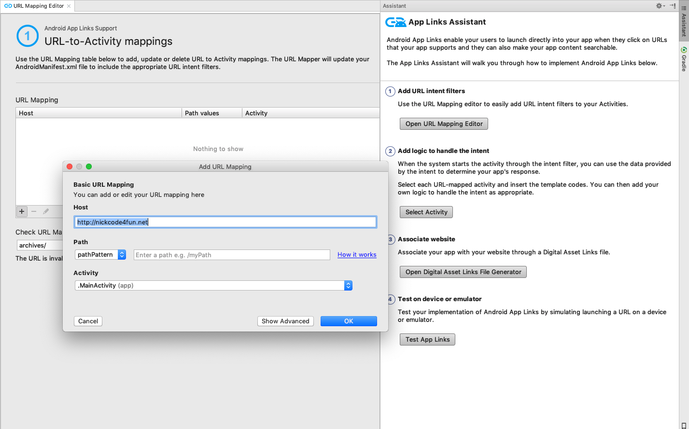

Introduction
何謂Deep Links:
Deep Links是指透過指定連結，來喚起指定應用，並可以向指定頁面傳送數據，它使我們應用程式之間產生了關係，讓應用不再孤立，優化了使用者體驗。
Deep Links採用Uri Scheme的方式來實現，如果不太了解Uri Scheme的人，可以查詢
維基百科
下面就簡單展示一下Uri Scheme組成:
1 | hierarchical part |
下面我們來實做一下，如何在Android上實現Deep Links。
Add intent filters for incoming links
首先當我們在點擊連結或 Web URI 的意圖時，Android系統會依序執行以下操作，直到意圖成功被Handle
- 使用者指定的可以處理
URI的應用程式 - 打開安裝的應用中，可以處理此
URI的應用 - 允許用戶選擇可以Handle此
URI的應用程式
所以為了讓URI成功被Handle，我們必須在Android專案目錄裡manifest文件下，指定activity標籤中，新增intent-filter
1 | <application...> |
Read data from incoming intents
你可以在系統啟動你的Activity時，透過Intent中的getData()與getAction()方法，取得與意圖相關的資訊。
1 | @Override |
運行效果如下:
那麼如何取得URL攜帶的Data呢？
Ex: http://nickcode4fun.net/archives?type=1&id=10001
1 | @Override |
運行效果如下:
現在Android Studio提供圖形化介面來管理Deep Links，詳情可以參考下面連結
- Select Tools > App Links Assistant.
- Click Open URL Mapping Editor and then click Add at the bottom of the URL Mapping list to add a new URL mapping.
